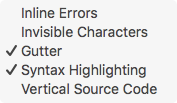
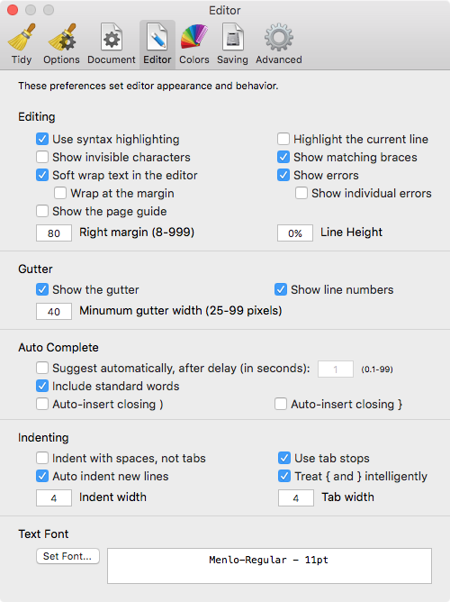
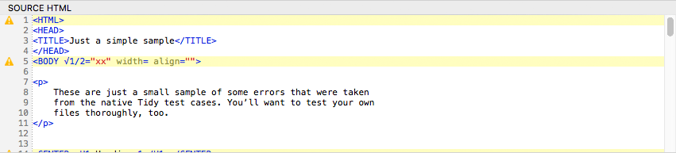
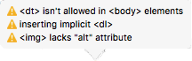

Work with Messages in the Source Area
You can work much closer to Balthisar Tidy for Work’s messages by displaying them in the line number gutter and having their locations marked directly in your source document.
-
First make sure that the gutter is visible by using the Gutter menu item of the Source Code submenu of the View menu. 
-
Also make sure that Show Errors is enabled in the Editor pane of Preferences. .
-
If your document contains errors or generates Tidy messages, you will see an icon representing the error level of the most severe error on that line in the line number gutter. 
-
Clicking on a message icon will reveal a list of Tidy messages with a corresponding icon indicating the error level for each message. 
-
Note that if there is only one error on the line, then an icon will not appear for that error item, as it would be redundant.